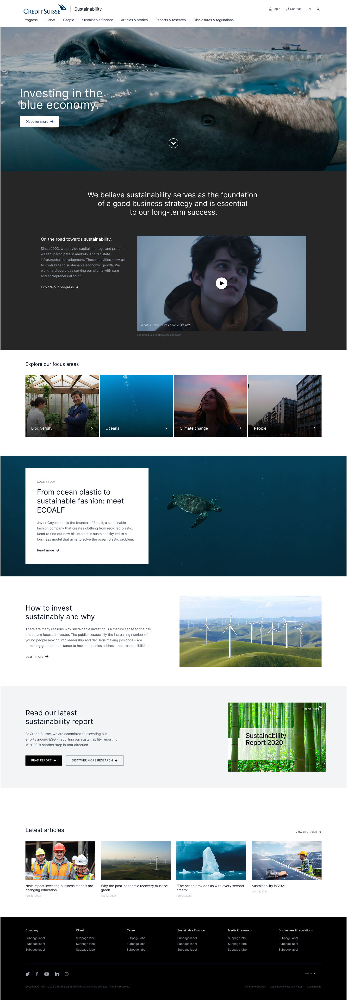
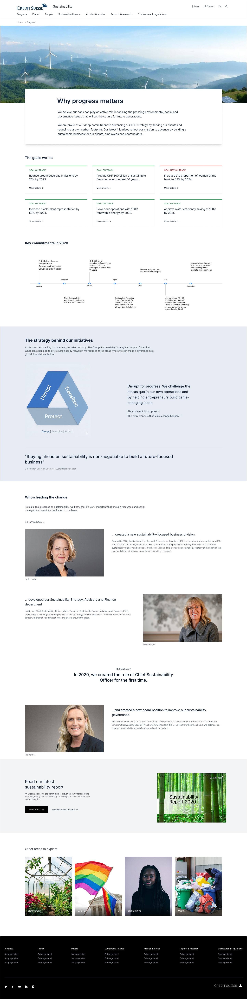
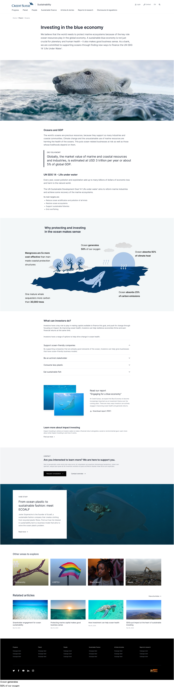
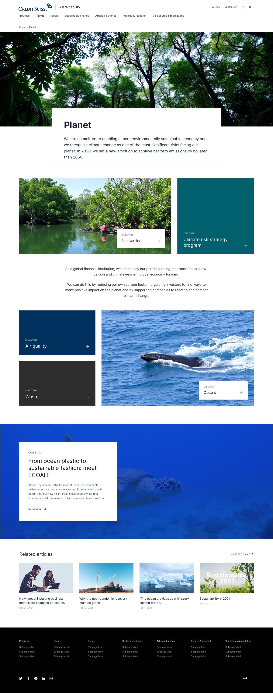
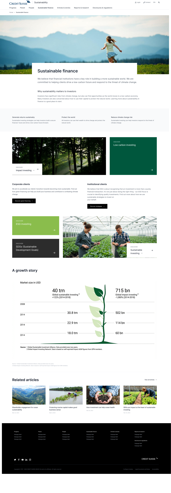
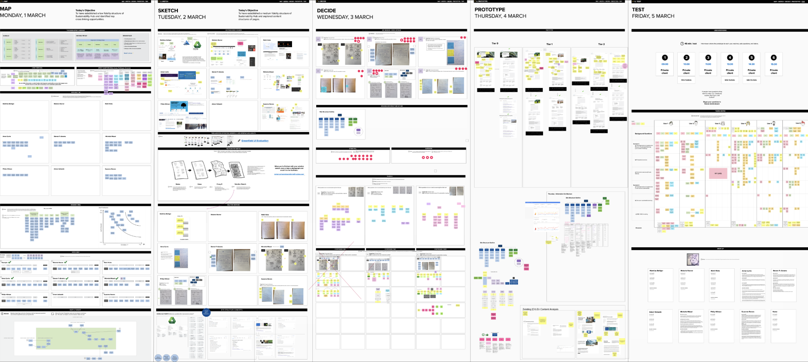
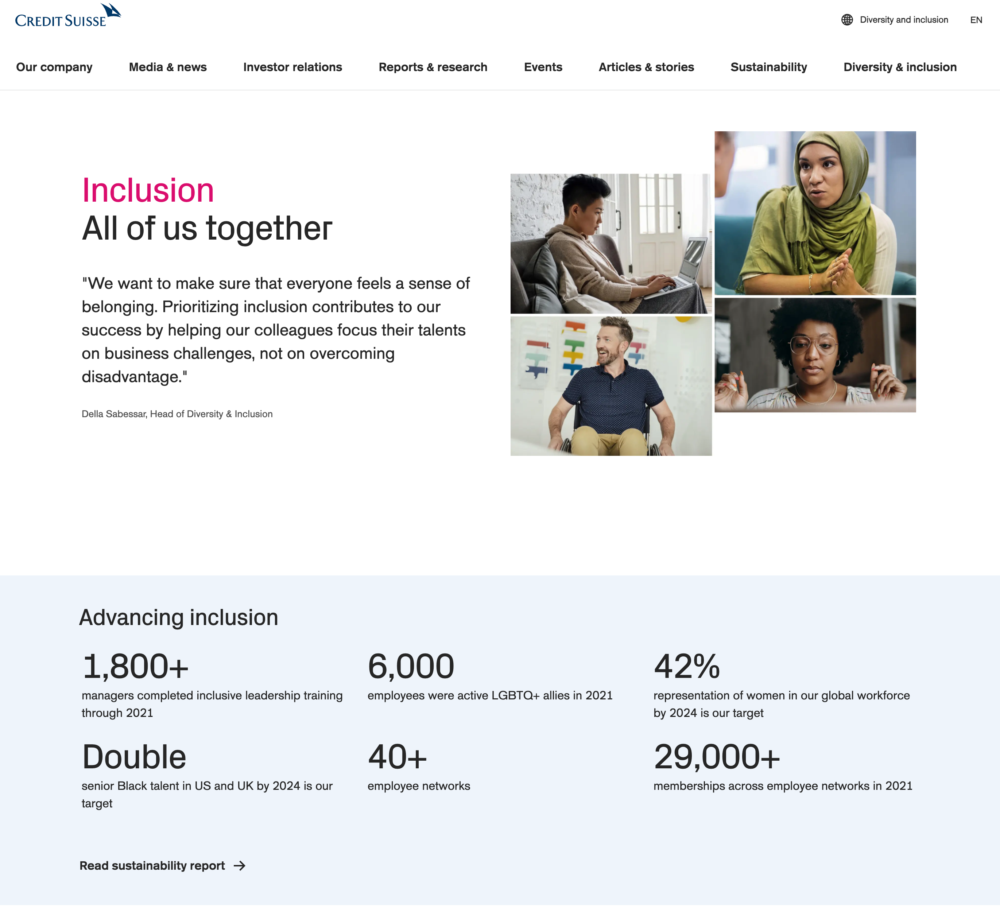

Building a Sustainability Hub, End-to-End
Credit Suisse | Zürich, Switzerland
Goal
Develop a Sustainability Hub for Credit-Suisse.com, centralizing all sustainability initiatives and providing transparency by presenting the company's goals, metrics, and progress.
Output of the design sprint process

Home

Progress

Oceans

Planet

Sustainable Finance
Approach
This work began as a vague executive board member request to create a sustainability presence on Credit-Suisse.com. I reframed the request based on why the executive board member was focused on this and how UX research could 'ladder up' to the business priorities.
The question became: What does 'sustainability' mean at Credit Suisse to our clients and stakeholders, and how can we better show our work through our digital channels, leading to a 20% uptick in Sustainability report downloads?
Process
- 25 deep-dive stakeholder interviews with employee networks, D&I leadership, clients, and consultants, uncovering the need for a centralized platform to increase transparency around sustainability goals and how progress is measured.
- Benchmarked our online sustainability presence against financial and non-financial institutions, identifying key gaps in transparency and communication.
- Secured 400,000 CHF for the design and development of a Sustainability Hub based on research findings.
- Introduced design sprints to rapidly iterate, prototype, and test concepts, collaborating closely with a designer.
- Conducted user testing throughout the process to refine the platform before, during, and after development.
- Reported on analytics data during the assessment phase to ensure the platform's effectiveness and impact.
Design Sprints
I co-introduced the Google Ventures Design Sprint method to the organization. We ran three sprints over three weeks: I co-defined the problem framing for each sprint, helped facilitate the sessions, ran all user testing, and helped drive the final decisions. As the UX lead for our weekly global sustainability discussions, I was the go-to UX person throughout the sprints and subsequent development, often pushing back when stakeholder requests conflicted with business and user needs.
Key achievement: This was the first time Design Sprints had been used at Credit Suisse. Getting a large, siloed organization to prototype and test with real users every week required constant buy-in work.

Sprint 1
Framed the key questions, facilitated brainstorming, and defined the IA. Testing with six users revealed navigation label issues, but the overall direction held.
Sprint 2
Led IA adaptations based on week 1 findings. Users valued the emphasis on tracking goals and measuring real progress over time.
Sprint 3
Synthesized three weeks of feedback, SEO guidelines, and stakeholder input into a final IA and content framework that carried into implementation.
These three sprints produced the IA, content framework, and tested prototype that went directly into development, launching as the Sustainability Hub in record time.
Impact
- 40% increase in Sustainability Report downloads during the first four weeks.
- A new insights-led sustainability hub centralizing all sustainability activities across the company.
- Executive board visibility.
- Launched new research focused on developing a Diversity & Inclusion Hub, which resulted in receiving 200,000 CHF for design and development.

Click to see more